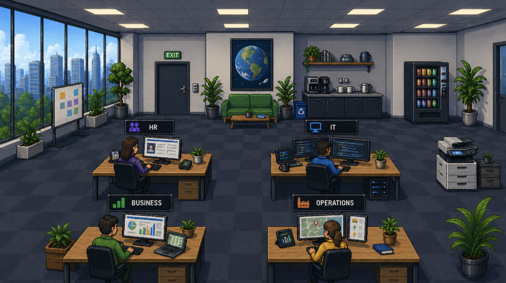
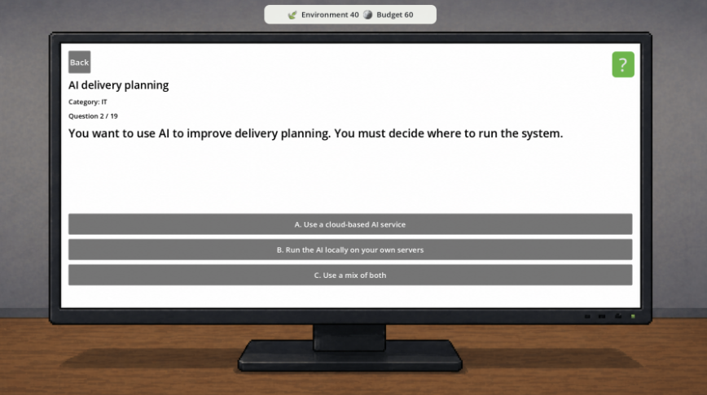
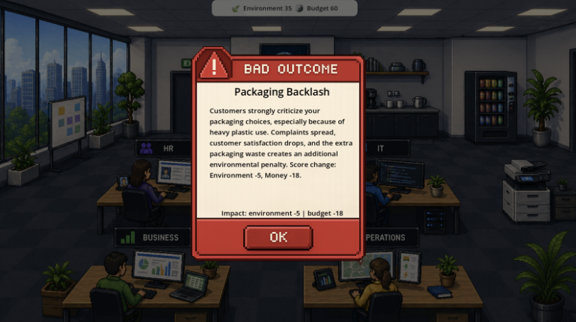

Green CIO
An educational serious game developed during my exchange at INSA Lyon in collaboration with Crédit Agricole Group Infrastructure Platform, exploring responsible digital practices and Green IT through decision-making.
About the group project
Green CIO was developed as a group project during my exchange semester at INSA Lyon. The project was proposed by Crédit Agricole Group Infrastructure Platform and focused on creating an engaging way to raise awareness about responsible digital practices and Green IT.
Digital services such as cloud storage, AI and online systems can often feel immaterial, even though they depend on data centers, electricity, cooling, hardware manufacturing and physical infrastructure.
Instead of explaining these environmental impacts through a traditional presentation, we created a game where the player experiences the consequences of digital and business decisions.


You are the CIO
In the game, the player takes the role of a Chief Information Officer and is responsible for making decisions across the company.
Every decision affects two main scores: the company's financial position and its environmental impact. Some sustainable choices require greater investment, while cheaper alternatives may have a larger environmental cost.
The goal is therefore not simply to choose the most sustainable option every time, but to keep the company financially viable while making responsible decisions and managing risk.
Decisions and consequences
The scenarios are divided into four areas: IT, Operations, HR and Business. This allowed us to show that responsible digital strategy extends beyond servers and software and is connected to decisions across an entire organisation.
Players encounter questions about topics such as cloud services, AI, cybersecurity, data storage, hardware, transport, suppliers, remote work and energy use.
Some decisions can also trigger unexpected events later in the game, including cyberattacks, data loss, media scandals and reputation problems. Earlier decisions can therefore influence what happens later.


Research and scoring
A major part of the project was designing a scoring system that was meaningful without making the game unnecessarily complex.
We researched environmental impacts connected to different scenarios and used real-world environmental resources to guide the scoring. Examples include comparing transport by truck and train, purchasing new versus refurbished devices, and storing unnecessary data.
Game development
Green CIO was developed using Godot and GDScript. The game consists of separate scenes for the introduction, main gameplay and final evaluation.
A separate game state keeps track of scores, previous answers and event flags, allowing earlier decisions to affect later parts of the game.
Data-driven scenarios
Questions, answer options, score impacts, explanations and conditional events are stored in JSON rather than being hard-coded into the main gameplay logic.
This makes the game easier to maintain and allows new scenarios to be added without changing the core gameplay implementation.